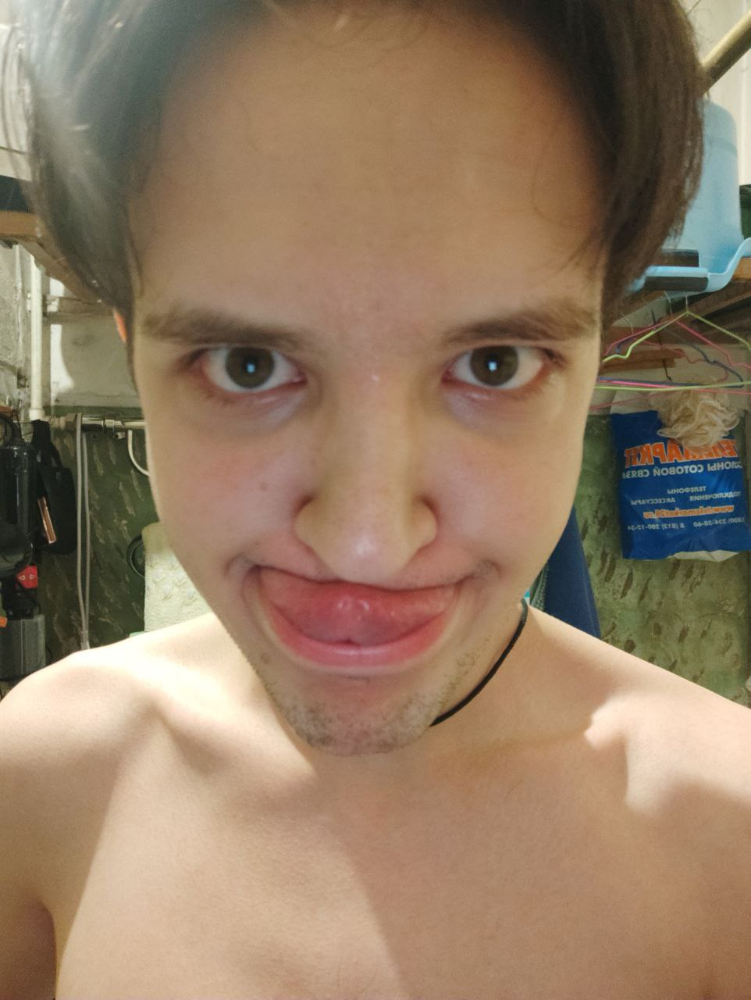

My name is Valeryy, also called Ivsm and this is my IT-life-page. Here I will place all my success in a digital world and, who does know, may be it will grow in something more than a simple page. Special tnaks to those people that(may be without intention) inspired me at certain points of time

Name: Valeryy
Cername: Kozhura
Born: 20.06.1998
Motherland: Russia, Nizhnekamsk city
Lives in: Seint-Petersburg
Education: BGTU "VOENMEH"
Steck: HTML/CSS, JS, JAVA, PHP
GitHub: https://github.com/Ivsmcrew
Я родился в маленьком городке под названием Нижнекамск. Меня в основном воспитывали любимые мама и папа, иногда бабушка. Родители всегда были ответственными работниками на главном предприятии города "НКНХ", у обоих высшее образование( папа - технолог, мама - механик), от других о них вы услышите только хорошее. От них я унаследовал предрасположенность к точным наукам, желание все изучать(наверно поэтому в детстве все машинки были разобраны), желание задавать вопросы. Много времени в детстве я провел в секции моделирования самолётов и ракет, особенно мне нравились ракеты, в дальнейшем это определит мой жизненный путь. Было место в моем раннем возрасте и для самовыражения через рисование и музыку. У меня довольно неплохо получалось и временами я думал серьезно заняться написанием собственной музыки. Но в старших классах почти все время занимала учеба. Мне неплохо давались математика, информатика и физика, но выбранными экзаменами были профильная математика и физика, сдав их успешно я поступил в Санкт-Петербург в университет Военмех на специальность Ракетостроение. Там я познакомился с двумя людьми, которые определили во многом мои будущие увлечения. Антон и Алексей, главными общими интересами стали увлеченность музыкой и учеба. Мы провели много времени репетируя и обсуждая песни, играя на улицах, этот период был одновременно самым беззаботным и напряжённым, ведь нужно было выбирать между музыкой и университетом. Выбор пал на второе, хотя и сегодня мы периодически что-то играем. По окончании университета я окончательно утратил интерес к ракетам, поэтому устроившись инженером-конструктором на первом попавшемся заводе начал серьезно задумываться о программировании. Так, спустя время тяжёлого и интересного самообучения, я попал в компанию...